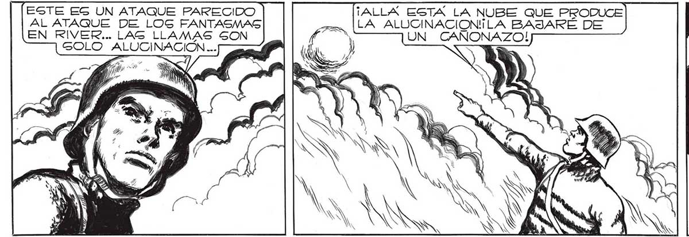
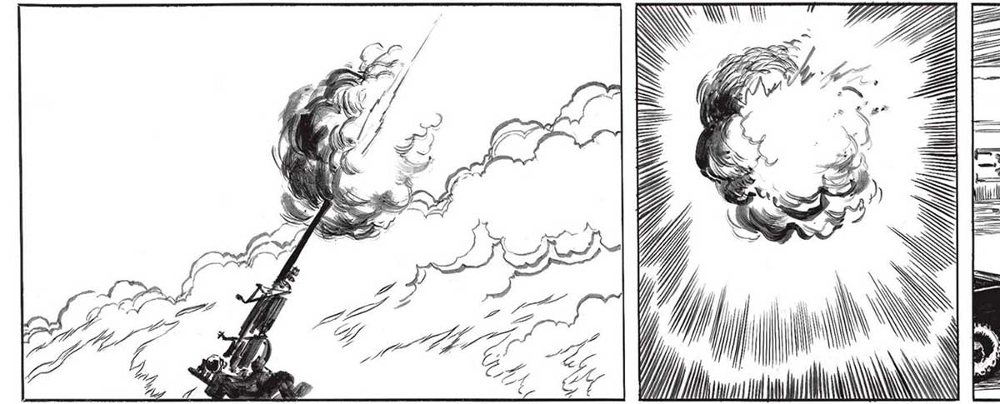
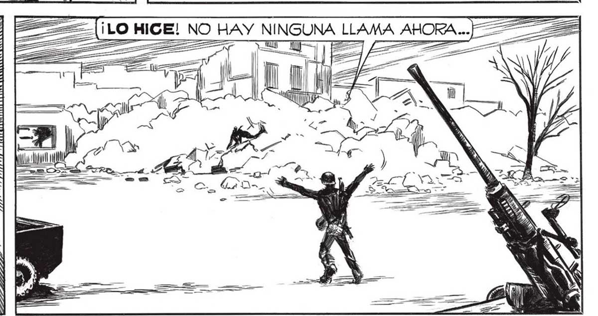

202 ESTE EG UN ATAQUE PARECIDO AL ATAQUE DE LOGS FANTASMAS EN RIVER... LAS LLAMAS SON GOLO ALUCINACIÓN... ¡ALLA ESTA LA NUBE QUE PRODUCE LA ALUCINACIONILA BAJARÉ DE UN CANONAZO! N Ñ A | AN NN (nd ¿Y LAG LLAMAG?] | ERAN ALUCINACIOÓN. COMO LOS FANTASMAS DE RIVER... NS INN A TIEMPO, JUAN... AGRADÉCELE A LA VIGA NO ME ELLA QUE LOS ESDEJABA RESPIRAR. COMBROS NO TE APLAGSTARAN. ALGUNOG ! EL INCENDIO LOS ATE- $ RRO Y ESCAPARON POR LAG HERAS... PERO... ¡AHÍ VUELVEN [$ ¿QUÉ LES HA El BRA PAGADO? ¡PARECEN TRABAJE COMO UN LOCO PARA LIBERARA . FAVALLI. CASI NIME DI CUENTA DE QUÉ DECÍA Y HACIA FRANCO... LL -= A _ A a


